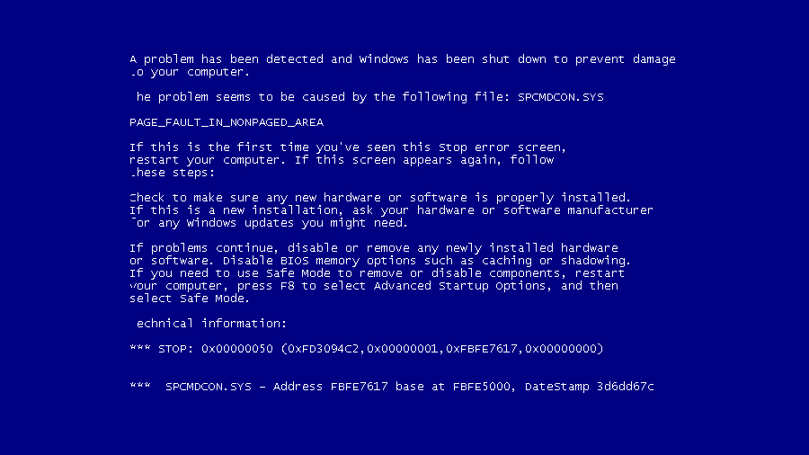

Ultima noticia
Windows: Inseguridad prolognada
Se identifica algunas de las vulnerabilidades que Microsoft detectó en algunos de sus sistemas, esta vulnerabilidad de seguridad que se pueden ver presentes en algunos sistemas como lo son Windows basado en 32 bits, Windows basado en 64 bits, sistemas de windows basados en ARM64 y Windows Server core 2016. Pueden verse aprovechados por el atacante para así explotar código que es arbitrario. Actualmente, Microsoft ya está distribuyendo un listado de las actualizaciones que debes tomar en cuenta si es que alguno de tus equipos se ve afectado por estas fallas.
